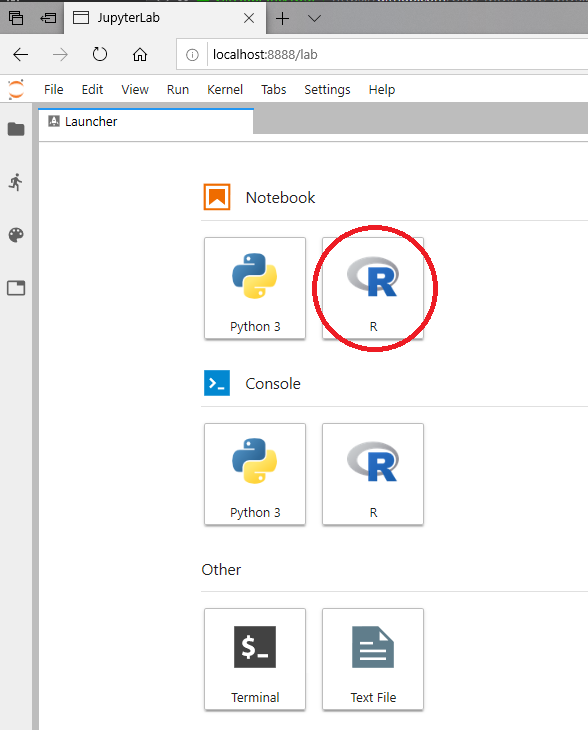

Ubuntu Software Stack#
Important
This guide has been (lightly) adapted from the UBC-Vancouver MDS Install stack under a CC-BY-SA 4.0 license.
These instructions will walk you through installing the required software stack for the UBC Master of Data Science program. Before starting, ensure that your laptop meets our program requirements:
runs one of the following operating systems: macOS 10.15.X (Catalina), Ubuntu 20.04, Windows 10 Professional, Enterprise or Education; version 2004.
Windows 10 Home is not sufficient as not all the software required for the program can be installed on that OS. Click here to download Windows 10 Education for free from UBC.
When installing Ubuntu, checking the box “Install third party…” will (among other things) install proprietary drivers, which can be helpful for wifi and graphics cards.
can connect to networks via a wireless connection
has at least 50 GB disk space available
has at least 8 GB of RAM
uses a 64-bit CPU
is at most 6 years old at the start of the program (4 years old or newer is recommended)
uses English as the default language
student user has full administrative access to the computer
Students’ whose laptops do not meet the requirements specified above will not be able to receive technical assistance from the MDS team in troubleshooting installation issues.
Table of Contents#
Installation notes#
If you have already installed Git, Latex, or any of the R or Python related packages please uninstall these and follow the instructions below to reinstall them (make sure to also remove any user configuration files and backup them if desired). In order to be able to support you effectively and minimize setup issues and software conflicts, we require all students to install the software stack the same way.
In all the sections below, if you are presented with the choice to download either a 64-bit (also called x64) or a 32-bit (also called x86) version of the application always choose the 64-bit version.
Once you have completed these installation instructions, make sure to follow the post-installation notes at the end to check that all software is setup correctly.
UBC Student Email#
Please sign up for a UBC Student Email. This account will also grant you access to a range of UBC services, including Microsoft Teams and OneDrive. To do so navigate to https://it.ubc.ca/services/email-voice-internet/ubc-student-email-service and follow the instructions under “Get Started”.
Web browser#
In MDS we will be using many tools that work most reliably on Google Chrome and Firefox (including our online quiz software), so we recommend that you use one of these browsers.
Firefox comes preinstalled with Ubuntu, so there is not need to download anything.
To install Chrome, go to https://www.google.com/chrome/, click on “Download Chrome” choose the deb-file, download it to your computer and click on the downloaded file to install it.
Note that if you select “open with” and try to open the file directly with the Ubuntu Software app instead of downloading it first, the software app might complain that the file is not supported.
Visual Studio Code#
The open-source text editor Visual Studio Code (VS Code) is both a powerful text editor and a full-blown Python IDE, which we will use for more complex analysis. You can install VS Code either via the Snap store/Ubuntu software app through this link or via the downloadable deb-file from the VS code website https://code.visualstudio.com/download. The getting started instructions are here: https://code.visualstudio.com/docs/?dv=linux64_deb.
You can test that VS code is installed and can be opened from Terminal by restarting terminal and typing the following command:
code --version
you should see something like this if you were successful:
1.47.0
d5e9aa0227e057a60c82568bf31c04730dc15dcd
x64
GitHub#
In MDS we will use the publicly available GitHub.com as well as an Enterprise version of GitHub hosted here at UBC, GitHub.ubc.ca. Please follow the set-up instructions for both below.
GitHub.com#
Sign up for a free account at GitHub.com if you don’t have one already.
GitHub.ubc.ca#
To add you to the MDS organization on Github.ubc.ca we need you to login to Github.ubc.ca using your CWL credentials.
This step is required for
being able to store your work
all homework submission and grading
working collaboratively
Git#
We will be using the command line version of Git as well as Git through RStudio and JupyterLab. Some of the Git commands we will use are only available since Git 2.23, so if you’re Git is older than this version, we ask you to update it using the following command:
sudo apt update
sudo apt install git
You can check your git version with the following command:
git --version
Configuring Git user info#
Next, we need to configure Git by telling it your name and email. To do this type the following into the terminal (replacing Jane Doe and janedoe@example.com, with your name and email (the same you used on GitHub), respectively):
git config --global user.name "Jane Doe"
git config --global user.email janedoe@example.com
Note: to ensure that you haven’t made a typo in any of the above, you can view your global Git configurations by either opening the configuration file in a text editor (e.g. via the command
code ~/.gitconfig) or by typinggit config --list --global.
Setting VS Code as the default editor#
To make programs run from the terminal (such as git) use VS Code by default, we will modify the bash configuration file ~/.bashrc. First, open it using VS Code:
code ~/.bashrc
Note: If you see any existing lines in your
~/.bashrcrelated to a previous Python or R installation, please remove these.
Append the following lines:
# Set the default editor for programs launch from terminal
EDITOR="code --wait"
VISUAL=$EDITOR # Use the same value as for "EDITOR" in the line above
Then save the file and exit VS Code.
Most terminal programs will read the
EDITORenvironmental variable when determining which editor to use, but some readVISUAL, so we’re setting both to the same value.
Python, Conda, and JupyterLab#
Python and Conda#
We will be using Python for a large part of the program, and conda as our Python package manager. To install Python and the conda package manager, we will use the Miniconda platform (read more here), for which the Python 3.8 64-bit version can be downloaded here.
Once the download is finished, open Terminal and execute the following commands:
bash path/to/file
Note: most often this file is downloaded to the
Downloadsdirectory, and thus the command will look like this:bash Downloads/Miniconda3-latest-Linux-x86_64.sh
The instructions for the installation will then appear:
(1) Press Enter.
(2) Once the licence agreement shows, you can press space scroll down, or press q to skip reading it.
(3) Type yes and press enter to accept the licence agreement.
(4) Press enter to accept the default installation location.
(5) Type yes and press enter to instruct the installer to run conda init, which makes conda available from the terminal/shell.
After installation, restart the terminal. If the installation was successful, you will see (base) prepending to your prompt string. To confirm that conda is working, you can ask it which version was installed:
conda --version
which should return something like this:
conda 4.8.3
Next, type the following to ask for the version of Python:
python --version
which should return something like this:
Python 3.8.3
Note: If instead you see
Python 2.7.Xyou installed the wrong version. Uninstall the Miniconda you just installed (which usually lives in the/home/<USER>directory), and try the installation again, selecting Python 3.8.
Essential Python packages#
conda installs Python packages from different online repositories which are called “channels”.
A package needs to go through thorough testing before it is included in the default channel,
which is good for stability,
but also means that new versions will be delayed and fewer packages are available overall.
There is a community-driven effort called the conda-forge (read more here),
which provides more up to date packages
To enable us to access the most up to date version of the Python packages we are going to use,
we will add the more up to date channel,
To add the conda-forge channel by typing the following in the terminal:
conda config --add channels conda-forge
To install packages individually, we can now use the following command: conda install <package-name>. Let’s install the key packages needed for the start of our program:
conda install \
"jupyterlab=2.*" \
"numpy=1.*" \
"pandas=1.*" \
"flake8=3.*" \
"black=19.*"
conda will show you the packages that will be downloaded,
and you can press enter to proceed with the installation.
If you want to answer yes by default and skip this confirmation step,
you can replace conda install with conda install -y.
Note: we will use many more packages than those listed above across the MDS program, however we will manage these using virtual environments (which you will learn about in DSCI 521: Platforms for Data Science).
JupyterLab setup#
We will be using the Jupytext Python package and the JupyterLab git extension to facilitate using Jupyter notebooks with Git & GitHub. Install them via the following commands:
conda install nodejs=10.*
pip install --upgrade jupyterlab-git
conda install jupytext=1.*
jupyter lab build
To test that your JupyterLab installation is functional, you can type jupyter lab into a terminal, which should open a new tab in your default browser with the JupyterLab interface.
To exit out of JupyterLab you can click File -> Shutdown,
or go to the terminal from which you launched JupyterLab and hold Ctrl while pressing c twice.
R, IRkernel, and RStudio#
R is another programming language that we will be using a lot in the MDS program. We will use R both in Jupyter notebooks and in RStudio.
R#
The version of R available in the default Ubuntu repositories (3.6.*) is older than the one we use in MDS (4.*). To obtain the latest R 4.* packages, we need to add a new repository which is maintained directly by the r-project. To do this, first add the key for this repository by typing the following:
sudo apt-key adv --keyserver keyserver.ubuntu.com --recv-keys E298A3A825C0D65DFD57CBB651716619E084DAB9
Then add the URL to the repository:
sudo apt-add-repository 'deb https://cloud.r-project.org/bin/linux/ubuntu focal-cran40/'
Next, install r-base and r-base-dev (useful for compiling R packages from source):
sudo apt install r-base r-base-dev
After installation, type the following in a terminal to ask for the version:
R --version
You should see something like this if you were successful:
R version 4.0.2 (2020-06-22) -- "Taking Off Again"
Copyright (C) 2020 The R Foundation for Statistical Computing
Platform: x86_64-pc-linux-gnu (64-bit)
R is free software and comes with ABSOLUTELY NO WARRANTY.
You are welcome to redistribute it under the terms of the
GNU General Public License versions 2 or 3.
For more information about these matters see
https://www.gnu.org/licenses/.
Note: Although it is possible to install R through conda, we highly recommend not doing so. In case you have already installed R using conda you can remove it by executing
conda uninstall r-base.
RStudio#
Download the Ubuntu 18/Debian 10 Desktop version of RStudio Preview from https://rstudio.com/products/rstudio/download/preview/. Open the file and follow the installer instructions.
Note that there is not yet an official RStudio version for Ubuntu 20.04, so it is recommended to use the Ubuntu 18 version. Also note that if you select “open with” and try to open the file directly with the Ubuntu Software app instead of downloading it first, the software app might complain that the file is not supported.
To see if you were successful, try opening RStudio by clicking on its icon or typing rstudio in a terminal. It should open and look something like this picture below:
Note that since we installed RStudio directly from a deb file rather than from a repository or a snap package, it will not be updated when we run
sudo apt upgradeand not automatically as for snap packages. Instead, RStudio will notify you of any available updates when the program is launched.
Essential R packages#
The tidyverse R package (and some others) have external dependencies on Ubuntu outside of R. We need to install these first before we install such R packages:
sudo apt install libcurl4-openssl-dev libssl-dev libxml2-dev
Next, install the key R packages needed for the start of MDS program, by opening up RStudio and typing the following into the R console inside RStudio:
install.packages(c('tidyverse', 'blogdown', 'xaringan', 'renv', 'usethis', 'devtools'))
Note: we will use many more packages than those listed above across the MDS program, however we will manage these using the
renvpackage manager (which you will learn about in DSCI 521: Platforms for Data Science).
IRkernel#
The IRkernel package is needed to make R work in Jupyter notebooks. To enable this kernel in the notebooks, install it and run the setup via the following two commands:
install.packages('IRkernel')
IRkernel::installspec()
Note: If you see an error message saying “jupyter-client has to be installed…”, close RStudio and run the following line from your terminal instead
R -e "IRkernel::installspec()".
To see if you were successful, try running JupyterLab and check if you have a working R kernel. To launch JupyterLab, type the following in a terminal:
jupyter lab
A browser should have launched and you should see a page that looks like the screenshot below. Now click on “R” notebook (circled in red on the screenshot below) to launch an JupyterLab with an R kernel.
Sometimes a kernel loads, but doesn’t work as expected. To test whether your installation was done correctly now type library(tidyverse) in the code cell and click on the run button to run the cell. If your R kernel works you should see something like the image below:

To improve the experience of using R in JupyterLab,
we will add an extension that allows us to setup keyboard shortcuts for inserting text
(thanks to former MDS student Ryan Homer for developing this extension!).
By default,
it creates shortcuts for inserting two of the most common R operators: <- and %>%.
Run the following from terminal to install the extension:
jupyter labextension install @techrah/text-shortcuts
jupyter lab build
To check that the extension is working,
open JupyterLab,
launch an R notebook,
and try inserting the operators by pressing Alt + - or Shift + Ctrl + m, respectively.
LaTeX#
We will install the lightest possible version of LaTeX and it’s necessary packages as possible so that we can render Jupyter notebooks and R Markdown documents to html and PDF. If you have previously installed LaTeX, please uninstall it before proceeding with these instructions.
First, open RStudio and run the following commands to install the tinytex package and setup tinytex:
install.packages('tinytex')
tinytex::install_tinytex()
The above is all we need to have LaTeX work with R Markdown documents, however for Jupyter we need to add the TinyTex executables to our PATH and install several more packages (PATH is a collection of directories which contain the available executable programs on your computer).
To append the TinyTex executables to our PATH we need to edit our .bashrc file. The TinyTex executables are usually installed in $HOME/bin. Thus, add the lines below to the bottom of your .bashrc file (which you can open by code $HOME/.bashrc) and save the file:
# Append TinyTex executables to the path
export PATH="$PATH:$HOME/bin"
When you launch a new terminal instance, this directory will have been added to your path (you can check this by running echo $PATH in the terminal.
Next, install the additional LaTeX packages needed for Jupyter by pasting the following into the new terminal instance and press enter:
tlmgr install eurosym \
adjustbox \
caption \
collectbox \
enumitem \
environ \
fp \
jknapltx \
ms \
parskip \
pgf \
rsfs \
tcolorbox \
titling \
trimspaces \
ucs \
ulem \
upquote
To test that your latex installation is working with jupyter notebooks,
launch jupyter lab from a terminal and open either a new notebook
or the same one you used to test IRkernel above.
Go to File -> Export notebook as... -> Export Notebook to PDF.
If the PDF file is created,
your LaTeX environment is set up correctly.
You can also check by typing the following to ask for the version of latex:
latex --version
You should see something like this if you were successful:
pdfTeX 3.14159265-2.6-1.40.21 (TeX Live 2020)
kpathsea version 6.3.2
Copyright 2020 Han The Thanh (pdfTeX) et al.
There is NO warranty. Redistribution of this software is
covered by the terms of both the pdfTeX copyright and
the Lesser GNU General Public License.
For more information about these matters, see the file
named COPYING and the pdfTeX source.
Primary author of pdfTeX: Han The Thanh (pdfTeX) et al.
Compiled with libpng 1.6.37; using libpng 1.6.37
Compiled with zlib 1.2.11; using zlib 1.2.11
Compiled with xpdf version 4.02
PostgreSQL#
We will be using PostgreSQL as our database management system. To install PostgreSQL type the following command:
sudo apt install postgresql postgresql-contrib
By default, this installation creates a new user called postgres,
which is the only one with permission to open the databases.
We will see how to set this up for other users later in the program,
but for now run the following to confirm that your installation was successful:
sudo su -c psql postgres
The above should yield the prompt to change to what is shown below:
psql (12.2 (Ubuntu 12.2-4))
Type "help" for help.
postgres=#
Note: to exit from Postgres type
exit, or pressctrl+d.
Docker#
You will use Docker to create reproducible, sharable and shippable computing environments for your analyses. For this you will need a Docker account. You can sign up for a free one here.
After signing-up, you also need to install Docker CE for Ubuntu. Install the stable version by following the installation instructions using the “Install using the repository” methods found here, including the subheadings “Set up the repository” and “Install Docker engine”.
Next, follow the Linux post installation steps here so that you can run Docker without typing sudo, and confirm that docker is working by following the verification instructions on that same page.
VS Code extensions#
The real magic of VS Code is in the extensions that let you add languages, debuggers, and tools to your installation to support your specific workflow. From within VS Code you can open up the Extension Marketplace (read more here) to browse and install extensions by clicking on the Extensions icon in the Activity Bar indicated in the figure below.

To install an extension, you simply search for it in the search bar, click the extension you want, and then click “Install”. There are extensions available to make almost any workflow or task you are interested in more efficient! Here we are interested in setting up VS Code as a Python IDE. To do this, search for and install the following extensions:
Python (everything Python: notebooks, debugging, linting, formatting, etc.)
markdownlint (markdown linting and style checking extension)
GitLens (powerful extension that extends VS Code’s native git capabilities)
Docker (easily use Docker from VS Code)
(Optional) Material Theme and/or Predawn Theme Kit (additional colour themes to choose from)
(Optional) Material Icon Theme (great-looking custom file icons!)
(Optional) Bracket Pair Colorizer 2 (add colour to help distinguish your brackets: (), [], {})
This video tutorial is an excellent introduction to using VS Code in Python.
Improving the bash configuration#
To improve your experience using bash, we recommend appending a few lines to the end of your bash configuration file. This is optional, but makes it easier to use the TAB key for autocompletion and improves how bash handles the command history (we will talk more about these topics during class). First, open the configuration file:
code ~/.bashrc
Then paste the following at the end of the file (make sure not to overwrite any existing lines) and save it afterwards:
# TAB completion configuration
# TAB completion ignores case
bind "set completion-ignore-case on"
# Require only one instead of two TAB presses before showing matches
bind "set show-all-if-ambiguous on"
# If there are multiple matches for completion, cycle through them with TAB
bind 'TAB':menu-complete
# Perform partial completion on the first Tab press,
# only start cycling full results on the second Tab press
bind "set menu-complete-display-prefix on"
# History configuration
# Cycle through history based on characters already typed on the line
bind '"\e[A":history-search-backward'
bind '"\e[B":history-search-forward'
# Append to the history file, don't overwrite it.
shopt -s histappend
# Write commands to history one-by-one right after they are executed
# instead of all together when the terminal is closed.
# Make new terminals see all commands run in currently open terminals and
# prepend a newline to the prompt string to separate it from the last command's output
PROMPT_COMMAND='history -a; echo'
# Increase history size
HISTSIZE=50000
HISTFILESIZE=50000
Post-installation notes#
You have completed the installation instructions, well done 🙌! We have created a script to help you check that your installation was successful, and to provide instructions for how you can troubleshoot any issues. To run this script, please execute the following command from your terminal.
bash <(curl -Ss https://raw.githubusercontent.com/UBC-MDS/UBC-MDS.github.io/master/resources_pages/check-setup-mds.sh)
The output from running the script will look something like this:
# MDS setup check 0.1.0
If a program or package is marked as MISSING,
this means that you are missing the required version of that program or package.
Either it is not installed at all or the wrong version is installed.
The required version is indicated with a number and an asterisk (*),
e.g. 4.* means that all versions starting with 4 are accepted (4.0.1, 4.2.5, etc).
You can run the following commands to find out which version
of a program or package is installed (if any):
```
name_of_program --version # For system programs
conda list # For Python packages
R -q -e "installed.packages()[,c(Package, Version)]" # For R packages
```
Checking program and package versions...
## Operating system
Operating System: Ubuntu 20.04
Architecture: x86-64
Kernel: Linux 5.4.0-28-generic
## System programs
OK psql 12.3
MISSING rstudio=1.*
OK R 4.0.2 (2020-06-22) -- "Taking Off Again"
OK python 3.8.3
OK conda 4.8.3
OK bash 4-pc-linux-gnu)
OK git 2.27.0
OK make 4.3
OK latex 3.14159265-2.6-1.40.21 (TeX Live 2020)
OK tlmgr 55369 (2020-06-01 02:32:00 +0200)
MISSING docker=19.*
MISSING code=1.*
## Python packages
MISSING jupyterlab=2.*
MISSING numpy=1.*
MISSING pandas=1.*
OK flake8=3.7.9
MISSING black=19.*
MISSING nodejs=10.*
OK jupytext=1.3.4
MISSING jupyterlab-git=0.*
MISSING jupyterlab PDF-generation failed. Check that latex and jupyterlab are marked OK above.
## R packages
OK tidyverse=1.3.0
OK blogdown=0.20
OK xaringan=0.16
OK renv=0.11.0
OK IRkernel=1.1.1
OK tinytex=0.25
OK rmarkdown PDF-generation was successful
This output and additional configuration details
have been saved to the file check-setup-mds.log in this directory.
As you can see at the end of the output, a log file is saved in your current directory. We might ask you to upload this file if we need to troubleshoot your installation, so that we can help you more effectively. If any of your packages are marked as “MISSING” you will need to figure out what is wrong and possibly reinstall them. Once all packages are marked as “OK” we will ask you to submit this log file, so that we can confirm that your installation was successful. Details on where to submit will be provided later.
Note that in general you should be careful running scripts unless they come from a trusted source as in this case (just like how you should be careful when downloading and installing programs on your computer).
Attributions#
UBC STAT 545 licensed under the CC BY-NC 3.0.